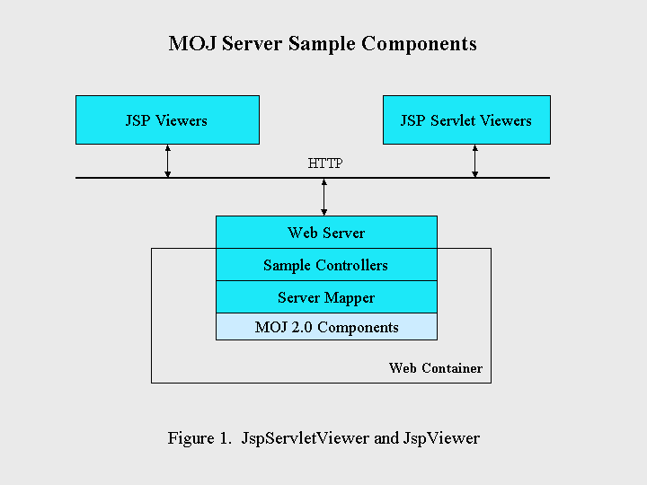
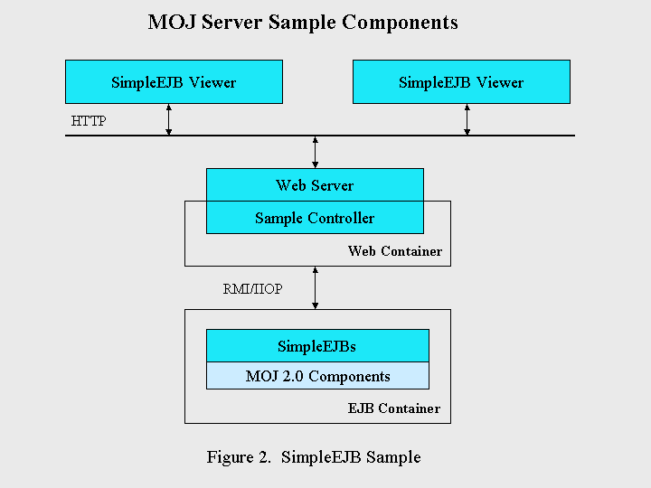
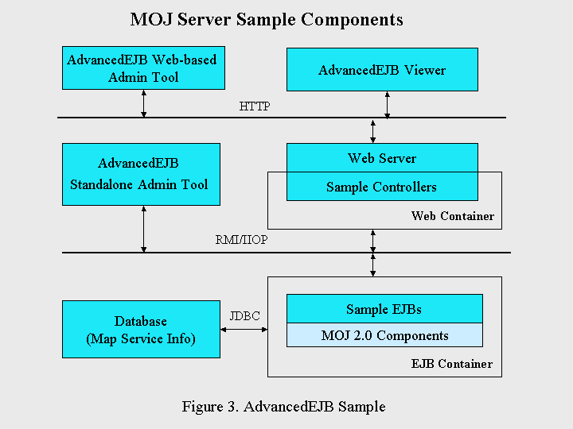

Introduction to MOJ20 Server Samples
1. Introduction
MapObjects-Java Edition 2.0 comes with a set of server samples that
you can deploy to different J2EE servers. Depending on which containers/J2EE
servers you want to deploy to, you can use either JspViewer/JspServletViewer
for Web containers or SimpleEJB/AdvancedEJB for EJB containers. All
these samples' source code is available for you to review and modify to
fit your organization's business needs. The JavaDoc for all samples is
available here, where detailed package
and class descriptions are available.
The following sections contain the design and implementation information
for each individual sample. You may want to review them first before you
jump to deploy them. There are four sample applications. Two of them, JspServletViewer
and JspViewer, are Web applications that can run in a Web container, while
the other two, SimpleEJB and AdvancedEJB, are EJB-based applications that
require an EJB container to run. All four sample applications follow the same
design pattern of MVC (Model-View-Controller).
2. JspServletViewer
The JspServletViewer application consists of a controller servlet
called ServletController (Controller), a number of JSP pages (Viewer),
and ServletMapper and its supporting classes that serve as a Model in
the MVC pattern. All of the requests/actions from a browser are directed
to the ServletController, which in turn calls ServletMapper to execute the
function/action and then pass the result to a JSP page for displaying in
the browser. The following diagram shows the architecture of JspServletViewer.
The request is sent to the controller running in a Web (Servlet) container
via a Web (HTTP) server. The MOJ server mapper components running within
the Web container do the work of processing and generating responses based
on the type of request. The controller then sends the results to an appropriate
JSP page to display in the browser client.

3. JspViewer
The JspViewer is almost identical to the JspServletViewer except that
it uses a JSP page called JSPViewerController as the controller (see Figure
1).
4. SimpleEJB Sample
The SimpleEJB sample application consists of a stateless session bean
serving as the model in MVC pattern, a JSP viewer called SimpleEjbViewer,
and a controller servlet called EJBControllerI. The model, stateless session
bean is accessed through its proxy, EJBMapperI. The stateless session
bean is defined by a trio of MapServiceI (EJB interface), MapServiceIHome
(EJB Home interface), and MapServiceIBean (an implicit implementation of
both EJB and Home interfaces). The following diagram depicts the relationships
among those components. A request coming from the JSP viewer is first handled
by the controller component, which calls the SimpleEJB running in an EJB
container through its proxy class via RMI/IIOP. The result from EJB is again
processed and sent to an appropriate JSP page by the proxy class. If two
containers (Web and EJB) are running in the same process, serialization and
de-serialization processes over RMI/IIOP could be reduced to a local object
reference.

5. AdvancedEJB Sample
The AdvancedEJB sample application consists of a viewer called AdvancedEjbViewer,
a controller called EJBControllerII, and a stateless session bean as the
model in the MVC pattern. The stateless session bean is defined by a trio
of MapServiceII (EJB interface), MapServiceIIHome (EJB Home interface), and
MapServiceIIBean (an implicit implementation of both EJB and Home interfaces).
They constitute the working components that get data from a local entity bean
defined by a trio of ServiceCatalogLocal (Local EJB interface), ServiceCatalogLocalHome
(Local EJB Home interface), and ServiceCatalogBean/ServiceCatalogBeanBMP
(an implicit implementation of EJB and Home interfaces). This local entity
bean is mapped to a map service table in a database. Each row in the map
service represents one service that contains information for each individual
service, such as service name, type, output image format, image output
directory or URL, and service configuration expressed in ArcXML. In this
AdvancedEJB application, there is an additional EJB, which is defined by
a trio of LayoutService (EJB interface), LayoutServiceHome (EJB Home interface),
and LayoutServiceBean (an implicit implementation of EJB and home interfaces).
This layout EJB provides functions to generate a layout image with elements
such as NorthArrow, ScaleBar, and Legend. A request coming from the JSP viewer
is first handled by the controller component, which calls the AdvancedEJB
or LayoutEJB running in an EJB container through its proxy class via RMI/IIOP.
The result from EJB is again processed and handled to an appropriate JSP
page by the proxy class. If two containers (Web and EJB) are running in the
same process, serialization and de-serialization processes over RMI/IIOP could
be reduced to a local object reference.

6. AdvancedEJB Admin Tools
There are two admin tools (Figure 3) for adding, removing, and updating
AdvancedEJB services. One is a standalone Java application that accesses
CatalogEJB running in an EJB container via RMI/IIOP. The other one is Web-based
and can be run in a browser but requires a third party downloadable utility.
There is a stateless session called CatalogEJB developed solely for the
purpose of administering services created as part of the AdvancedEJB sample.
The CatalogEJB is defined by Catalog (EJB interface), CatalogHome (EJB
Home interface), and CatalogBean (the implementation of EJB and Home interfaces).
It uses the same local entity bean defined in the last section to add, remove,
and update the service information stored in a database. The CatalogEJB
acts as a broker between admin tools and the local entity beans.
6.1 Standalone AdvancedEJB Admin Tool
The standalone admin tool directly connects to CatalogEJB for administering
services via RMI/IIOP. All of the main functions, such as listing, adding,
removing, and refreshing a service, are available from the left pane, and all
of them are self-explanatory. The application usually should run in the same
machine where the server and MapObjects Java 2.0 are installed. However,
if you make all of the necessary classes and resources available in another
machine within an Intranet environment, you could run it from a machine other
than the server.
6.2 Web-based AdvancedEJB Admin Tool
The Web-based admin tool uses a servlet controller called CatalogServlet
to access CatalogEJB for administering services. It has the same functionality
as the standalone admin tool, and its user interface is almost identical to
the standalone admin tool. Since it's a Web-based tool, it can run from anywhere
with a browser.
7. Deployment of Server Sample Applications
Currently ESRI has tested six different J2EE servers, including Apache
Tomcat and ServletExec. ESRI has created a deployment document for each
tested server as listed here:
For Apache Tomcat:
Deploy
the JSP viewers in Apache with Tomcat 4.1.18 on Linux
Deploy
the JSP viewers in Apache with Tomcat 4.1.18 on Solaris
Deploy
the JSP viewers in Apache with Tomcat 4.1.18 on Windows
Deploy
the JSP viewers in Apache with Tomcat 4.1.18 on Mac OS X
For ServletExec from New Atlanta:
Deploy
the JSP viewers in ServletExec 4.2 for Windows IIS
For JBoss:
Deploy
MOJ JSP viewers and EJBs in JBoss 3.0.6 with embedded Tomcat 4.1.18
For Sun ONE:
Deploy
MOJ JSP viewers and EJBs in Sun ONE Application Server 7
For WebLogic:
Deploy
MOJ JSP viewers and EJBs in WebLogic Server 7.0.2
For WebSphere:
Deploy
MOJ JSP viewers and EJBs in WebSphere Server 5.0